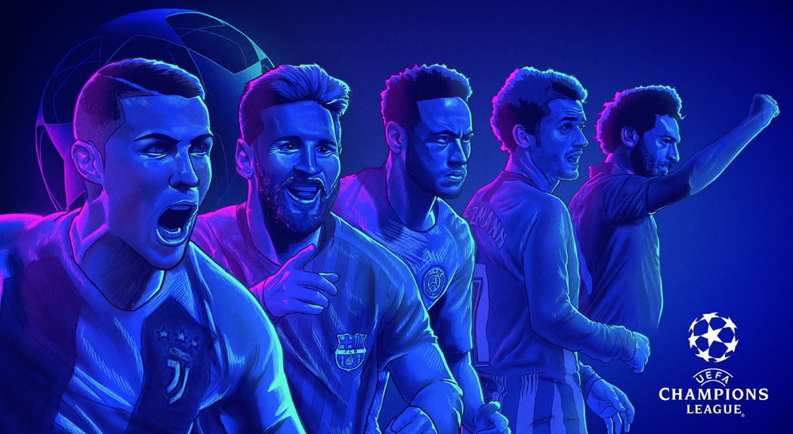
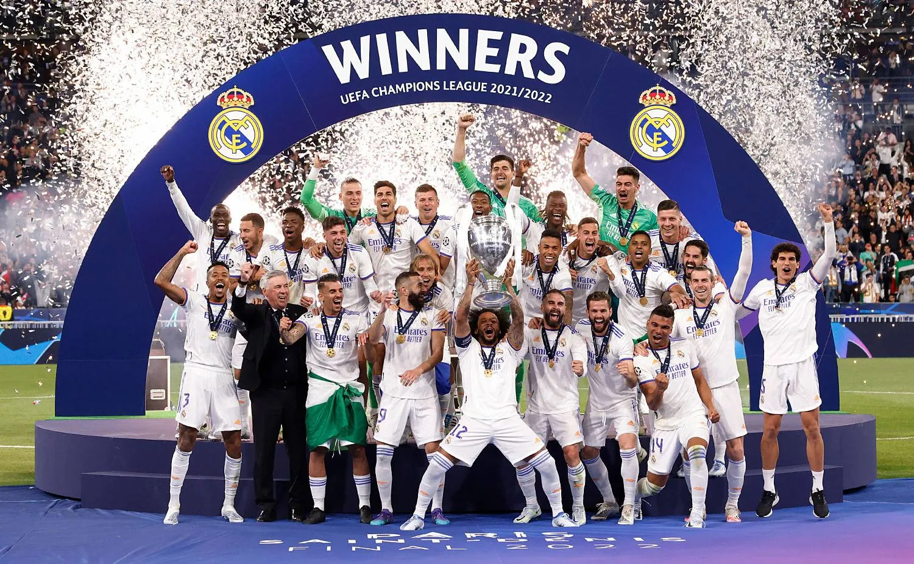

- 
- 

História

A Champions League foi criada em 1955 com o objetivo de reunir os principais clubes da Europa em um único torneio. De lá para cá, se tornou a maior competição entre clubes de futebol do mundo e também o maior evento esportivo anual mais visto no planeta.
A UEFA Champions League, anteriormente conhecida como Taça dos Clubes Campeões Europeus , é uma competição de clubes de futebol organizada anualmente pela UEFA (União das Associações Europeias de Futebol). A competição foi estabelecida em 1955 e é considerada o torneio de clubes mais prestigioso do futebol europeu.
A primeira edição da competição ocorreu na temporada 1955-1956 e envolveu a participação de 16 equipes. O Real Madrid, da Espanha, sagrou-se campeão vencendo o Stade de Reims, da França, por 4 a 3 na final.
O supertime do Real Madrid FC de Di Stéfano, Ferenc Puskás, Francisco Gento, Lenk e José Santamaría conquistou as cinco primeiras edições da Copa dos Campeões da Europa. A sequência foi quebrada pelo bicampeonato do Benfica (1960-61 e 1961-62).
A partir de 1992 a competição passou a se chamar UEFA Champions League, ou Liga dos Campeões da Uefa em português, com fase de grupos e duelos eliminatórios, com a divisão de vagas respeitando o ranking da entidade europeia. Antes os duelos eram todos eliminatórios.
Champions League, como o próprio nome entrega, celebra todos os campeões e melhores colocados das ligas europeias em uma só competição. Ou seja, o desempenho local garante a classificação para o torneio continental, o que eleva o patamar das competições nacionais do continente.